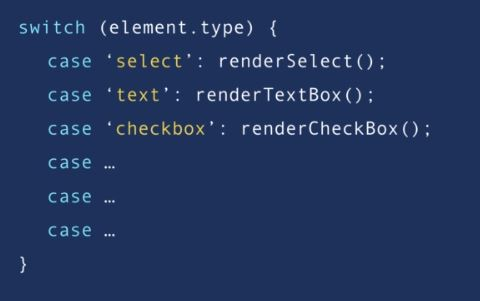

Object Oriented Programming JS - udemy
ref: https://tm.udemy.com/javascript-object-oriented-programming/
1. What is OOP?
- A programming paradigm centered around objests rather than functions.
- Trans: Object-oriented programming is a programming paradigm or style of programming that is centered around objects rather than functions. It's nothing new, it's been around since the 70's, but unlike tools and frameworks that come and go, object-oriented programming is still very relevant today, that's because it's not a programming language or tool. It's a style of programming or a programming paradigm. There are several programming languages out there that support object oriented programming, such as C#, Java, Ruby, Python, JavaScript, and more. Now JavaScript is a little bit controversial, but I will get to that later. It may interest you to know that many of the popular frameworks out there that you may know or be using are actually designed with object oriented programming concepts in mind. Angular is an example of these frameworks. So, object-oriented programming is a very popular style of programming, and it comes up in many technical interviews.
2. 4 Pillars of OOP
- Encapsulation, Abstraction, Inheritance, and Polymorphism.
- So in object-oriented programming you group related variables, and functions that operate on them into objects. And this is what we call encapsulation.
- So one of the symptoms of procedural code is functions with so many parameters. When you write code in an object oriented way, your functions end up having fewer and fewer parameters. As Uncle Bob says, the best functions are those with no parameters. The fewer the number of parameters, the easier it is to use and maintain that function. So that's encapsulation.
- Now let's look at abstraction. Think of a DVD player as an object. This DVD player has a complex logic interact with. You simply press the play button and you don't care what happens on the inside. All that complexity is hidden from you. This is abstraction in practice.
-
We can use the same technique in our objects. So we can hide some of the properties and methods from the outside, and this gives us a couple benefits.
- First, is that we'll make the interface of those objects simpler, using and understanding an object with a few properties and methods is easier than an object with several properties and methods.
- The second benefit is that it helps us reduce the impact of change. Let's imagine that tomorrow we change these inner or private methods. None of these changes will leak to the outside, because we don't have any code that touches these methods outside of their containing object. You may delete the method, or change it's parameters, but none of these changes will impact the rest of the applications code. So, with abstraction, you reduce the impact of change.
- Inheritance is a mechanism that allows you to eliminate redundant code.
- Here is an example. Think of html elements, like TextBox's, drop-down lists, checkboxes and so on. All these elements have a few things in common. They should have properties like hidden, and innter HTML and methods like click and focus.
Instead of redefining all these properties and methods for each HTML element, we can define them once in a generic object call it HTMLElement and have other objects inherit these properties and methods. So inheritance helps us eliminate redundant code.
- And finally Poloymorphism, Poly means many, morph means form. So poly morphism means many forms.
- In object-oriented programming, polymorphism is a technique that allows you to get rid of long if and l's or switch and case statements.
- So back to our HTML elements example, all these objects should have the ability to be rendered on a page. But the way each element is rendered is different from the others.
If you want to render multiple HTML elements in a procedural way, our code would probably look like this. But with object-orientation we can implement a render method in each of these objects,
and the render method will behave differently depending on the type of the object we are referencing.
-
So, we could get rid of this nasty switch and case,

and use one line of code like this.
-
-